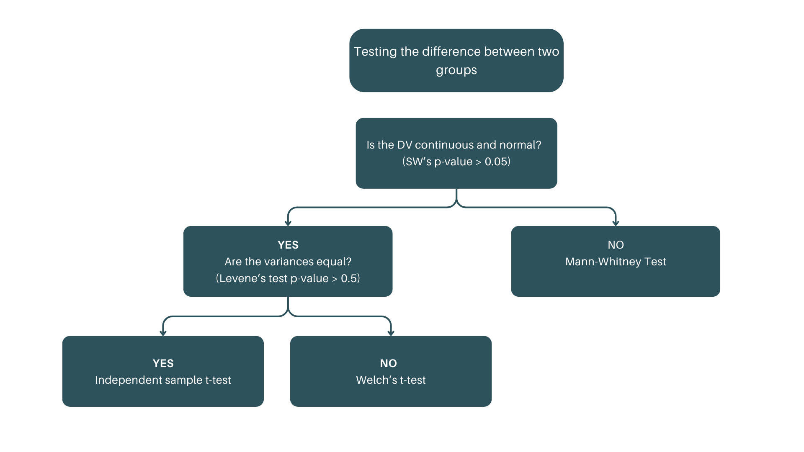
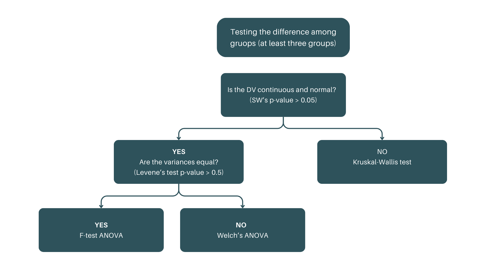

## setting cyl variable as factor
mpg_dta <-
mpg |>
filter(cyl %in% c(4, 8)) |>
mutate(cyl = as_factor(cyl))
head(mpg_dta)
# A tibble: 6 × 11
manufacturer model displ year cyl trans drv cty hwy fl class
<chr> <chr> <dbl> <int> <fct> <chr> <chr> <int> <int> <chr> <chr>
1 audi a4 1.8 1999 4 auto(… f 18 29 p comp…
2 audi a4 1.8 1999 4 manua… f 21 29 p comp…
3 audi a4 2 2008 4 manua… f 20 31 p comp…
4 audi a4 2 2008 4 auto(… f 21 30 p comp…
5 audi a4 quattro 1.8 1999 4 manua… 4 18 26 p comp…
6 audi a4 quattro 1.8 1999 4 auto(… 4 16 25 p comp….
Lessons
Introduction to hypothesis testing
Parametric vs non-parametric tests
Independent samples t-test
Paired samples t-test
One-way ANOVA
Chi-square test
Lesson 1: Introduction to hypothesis testing?
What is hypothesis testing?
Hypothesis testing is a statistical method used to make inferences or draw conclusions about a population based on sample data.
It involves evaluating two competing hypotheses to determine if there is enough evidence to support a particular claim.
Key Concepts in Hypothesis Testing
Null Hypothesis (H₀)
A statement suggesting no effect, no difference, or no relationship exists. This is the hypothesis that is tested.
Example: “There is no difference in the average test scores between two groups.”
Alternative Hypothesis (H₁ or Ha)
A statement that contradicts the null hypothesis, proposing that there is a significant effect or difference.
Example: “There is a significant difference in the average test scores between two groups.”
Steps in Hypothesis Testing
State the hypotheses: Define H₀ and H₁.
Choose a significance level (α): Common choices are 0.05 or 0.01. This determines the threshold for rejecting H₀.
Select the appropriate test: Based on the data type and hypotheses (e.g., t-test, ANOVA).
Compute the test statistic: This involves calculating a value that measures the difference between the sample data and the null hypothesis.
Make a decision:
- Reject H₀ if the test statistic shows significant evidence against H₀ (i.e., p-value < α).
- Fail to reject H₀ if there is not enough evidence (i.e., p-value ≥ α).
Types of Errors
Type I Error (False Positive)
Rejecting H₀ when it is actually true.
Example: Concluding there is a difference when there isn’t.
Type II Error (False Negative)
Failing to reject H₀ when it is false.
Example: Concluding there is no difference when there actually is.
Test Statistic and P-Value
The test statistic is a value calculated from the sample data used to decide whether to reject the null hypothesis.
The p-value is the probability of obtaining a result at least as extreme as the one observed, given that H₀ is true.
- If p-value < α, reject H₀; otherwise, fail to reject H₀.
Check-up quiz!
What is the purpose of hypothesis testing?
To prove a hypothesis is true.
To make inferences about a population based on sample data
To collect sample data.
To test the validity of a hypothesis in all situations.
Which of the following is the null hypothesis (H₀)?
There is a significant difference between the two groups.
There is no effect or no difference between the two groups
The sample data is unreliable.
The alternative hypothesis is true.
What does the p-value represent in hypothesis testing?
The probability that the null hypothesis is true.
The probability of observing a test statistic as extreme as the one calculated, assuming the null hypothesis is true
The critical value required to reject the null hypothesis.
The likelihood of making a Type II error.
Which of the following is a Type I error?
Concluding there is no effect when one exists.
Concluding there is an effect when none exists.
Rejecting the null hypothesis when it is true
Accepting the null hypothesis when it is false.
What is the significance level (α) typically set at in hypothesis testing?
0.10
0.01
0.05
0.50
Lesson 2: Parametric vs Non-parametric tests
Parametric and non-parametric tests
| Parametric | Non-parametric |
|---|---|
| Independent sample t-test | Mann-Whitney U test |
| Paired samples t-test | Wilcoxon signed rank test |
| One-way ANOVA | Kruskal-Wallis test |
| Chi-squared tests |
Statistical tests for comparing two groups
| Purpose | Data types | Usage |
|---|---|---|
|
|
|
Independent samples t-test
| Purpose | Data requirements | Example |
|---|---|---|
|
|
|
Independent sample t-test
Independent sample t-test
Steps in Hypothesis testing
State the hypotheses
Specify the decision rule and the level of
statistical significance.Test the assumptions and Identify the appropriate test.
Compute for the statistic and p-value
Decision: Compare p-value and alpha value.
Conclusion
Independent sample t-test
Activitiy: Comparison two independent group
Using the mpg dataset, test whether there is a statistically significant difference in the hwy miles per gallon (hwy) between 4-cylinder and 8-cylinder automobiles.
Independent sample t-test
Step 1: Import data and data management
Independent sample t-test
Step 3: Test of homogeneity of variance
car::leveneTest(data = mpg_dta, hwy ~ cyl, center = mean)
Levene's Test for Homogeneity of Variance (center = mean)
Df F value Pr(>F)
group 1 2.6677 0.1045
149
car::leveneTest(data = mpg_dta, hwy ~ cyl, center = median)
Levene's Test for Homogeneity of Variance (center = median)
Df F value Pr(>F)
group 1 3.277 0.07227 .
149
---
Signif. codes: 0 '***' 0.001 '**' 0.01 '*' 0.05 '.' 0.1 ' ' 1Step 4: Perform independent sample t-test
t.test(hwy ~ cyl, data = mpg_dta, var.equal = FALSE, na.rm = TRUE)
Welch Two Sample t-test
data: hwy by cyl
t = 17.586, df = 144.65, p-value < 2.2e-16
alternative hypothesis: true difference in means between group 4 and group 8 is not equal to 0
95 percent confidence interval:
9.918065 12.429731
sample estimates:
mean in group 4 mean in group 8
28.80247 17.62857 Independent sample t-test
Solution
- State the Null and Alternative Hypotheses
Ho: There is no significant difference in the average miles per gallon between 4-cylinder and 8-cylinder automobiles.
Ha: There is a significant difference in the average miles per gallon between 4-cylinder and 8-cylinder automobiles.
- Specify the level of statistical significance (α)
- α: 0.05
Independent sample t-test
Solution
- Test Assumptions
Normality: failed to satisfy
Homogeneity of variance: failed to Satisfy
Test to be used: Welch’s t-test
- Run the test in R, get the statistic and p-value
T Statistic: 17.58
p-value: 0.000
Independent sample t-test
Solution
- Decision
- Since the p-value (0.000) is less than alpha (0.05), reject Ho.
- Conclusion
- There is a significant difference in the average miles per gallon between 4-cylinder and 8-cylinder automobiles.
Independent sample t-test
Mann-Whitney U test
R Activity: Mann-Whitney U test
Instructions
Load the diamonds dataset from the
ggplot2package. Filter the data to include only “Very Good” and “Premium” cut diamonds. Sample 1000 observations from each group to ensure the Shapiro-Wilk test can be applied.Checking Assumptions: Normality and Homogeneity of Variance
Conduct the Mann-Whitney U test to compare the median prices of the two groups.
Interpret the result
Check up quiz
Which of the following is a key assumption of the independent t-test?
Normality of the dependent variable in both groups
Equal variances between the two groups
Independence of observations within each group
All of the above
When would you choose to use the Mann-Whitney U-test instead of an independent t-test?
When the sample sizes are small
When the data is normally distributed
When the variances of the two groups are equal
When the data is not normally distributed
Which of the following is a non-parametric test?
Independent t-test
One-way ANOVA
Mann-Whitney U-test
Pearson correlation
If the p-value of a Mann-Whitney U-test is less than 0.05, what conclusion can we draw?
There is no significant difference between the two groups
There is a significant difference between the two groups
The test is inconclusive
The assumptions of the test are not met
Dependent t-test
Used to compare the means of two related groups.
Example: Comparing test scores before and after a training program.
Assumptions: Normality, homogeneity of variance, and dependent observations.
Dependent t-test
Tip
Steps in hypothesis testing:
State the hypotheses.
Specify the level of statistical significance (α).
Test assumptions and identify the appropriate test.
Compute the statistic and p-value.
Decision: Compare p-value and alpha value.
Conclusion.
Dependent t-test
Activity: Dependent t-test
Using the a synthetic data on training scores of before and after a training program, test whether there is a statistically significant difference in the scores before and after the training program.
Dependent t-test
Step 1: Import data and data management
## using a synthetic dataset
before <- c(12.2, 14.6, 13.4, 11.2, 12.7, 10.4, 15.8, 13.9, 9.5, 14.2)
after <- c(13.5, 15.2, 13.6, 12.8, 13.7, 11.3, 16.5, 13.4, 8.7, 14.6)
training_data <- tibble(subject = rep(c(1:10), 2),
time = rep(c("before", "after"), each = 10),
score = c(before, after)) |>
mutate(time = as_factor(time))
head(training_data)
# A tibble: 6 × 3
subject time score
<int> <fct> <dbl>
1 1 before 12.2
2 2 before 14.6
3 3 before 13.4
4 4 before 11.2
5 5 before 12.7
6 6 before 10.4Dependent t-test
Step 3: Test of homogeneity of variance
Step 4: Perform dependent sample t-test
t.test(training_data$score[training_data$time=="before"],
training_data$score[training_data$time=="after"], paired = TRUE, na.rm = TRUE)
Paired t-test
data: training_data$score[training_data$time == "before"] and training_data$score[training_data$time == "after"]
t = -2.272, df = 9, p-value = 0.0492
alternative hypothesis: true mean difference is not equal to 0
95 percent confidence interval:
-1.077655745 -0.002344255
sample estimates:
mean difference
-0.54 Dependent t-test
Check-up quiz
Which of the following scenarios is appropriate for a paired samples t-test?
Comparing the test scores of two independent groups.
Measuring the effectiveness of a training program by comparing pre and post test scores of the same individuals
Comparing the heights of men and women in a population.
Testing the correlation between two variables.
What is the null hypothesis in a paired samples t-test?
The means of the two groups are equal.
The means of the paired measurements are equal.
The paired differences have a mean of zero
There is no relationship between the two variables.
In the context of a paired t-test, which of the following R functions is used to perform the test?
lm()t.test()aov()cor.test()
Statistical tests for comparing more than two groups
comparing more than two groups
comparing more than two groups
| Purpose | Data requirements | Example |
|---|---|---|
|
|
|
One-way Anova
| Purpose | Data requirements | Example |
|---|---|---|
|
|
|
One-way Anova
Steps in Hypothesis testing
State the hypotheses
Specify the decision rule and the level of
statistical significance.Test the assumptions and Identify the appropriate test.
Compute for the statistic and p-value
Decision: Compare p-value and alpha value.
Conclusion
One-way Anova
Step 1: Import data and data management
# Create the dataframe
exam_data <- data.frame(
group = c(
rep(1, 10),
rep(2, 10),
rep(3, 10)
),
exam = c(
50, 45, 48, 47, 45, 49, 50, 54, 57, 55, # Group 1
63, 55, 54, 49, 65, 46, 53, 67, 58, 50, # Group 2
71, 67, 68, 62, 65, 58, 63, 69, 70, 61 # Group 3
)
) |>
mutate(group = as_factor(group))
# View the dataframe
head(exam_data)
group exam
1 1 50
2 1 45
3 1 48
4 1 47
5 1 45
6 1 49One-way Anova
Step 3: Test of homogeneity of variance
One-way Anova
Step 5: Post-hoc test
One-way ANOVA
Kruskal-Wallis test
Step 1: read in data
# Create the dataframe
exam_data <- data.frame(
group = c(
rep(1, 10),
rep(2, 10),
rep(3, 10)
),
exam = c(
50, 45, 48, 47, 45, 49, 50, 54, 57, 55, # Group 1
63, 55, 54, 49, 65, 46, 53, 67, 58, 50, # Group 2
71, 67, 68, 62, 65, 58, 63, 69, 70, 61 # Group 3
)
) |>
mutate(group = as_factor(group))
# View the dataframe
head(exam_data)
group exam
1 1 50
2 1 45
3 1 48
4 1 47
5 1 45
6 1 49Kruskal-Wallist test
Step 3: run the test
Check-up quiz
What is the primary purpose of a one-way ANOVA test?
To compare the means of two independent groups.
To determine if there is a significant difference between the means of three or more independent groups
To analyze the relationship between two categorical variables.
To predict the value of a dependent variable based on one or more independent variables.
If the p-value obtained from an ANOVA test is less than the significance level (e.g., 0.05), what is the conclusion?
Reject the null hypothesis; there is sufficient evidence to conclude that at least one group mean is different
Fail to reject the null hypothesis; there is not enough evidence to conclude that any group means are different.
Accept the null hypothesis; all group means are equal.
The test is inconclusive.
After a significant result from an ANOVA test, what further analysis is typically conducted to determine which specific group means differ from each other?
t-test or Post-hoc tests
Chi-square test
Correlation analysis
Regression analysis
Chi-square test
Chi-square test of independence
| Purpose | Data types | Usage |
|---|---|---|
|
|
|
Econ 149: Analytical and statistical packages for economoics II